KISI-KISI BIOLOGI KELAS XI
1.
Jenis makanan yang merupakan sumber karbohidrat adalah ….
A. beras, jagung, daging, susu
B. beras, jagung, kentang, telur
C. gandum, sagu, biji-bijian, ikan
D. beras, jagung, gandum, sagu
E. beras, jagung, gandum, buah-buahan
2.
Ciri pernapasan dada pada waktu inspirasi adalah ….
A. otot tulang rusuk berkontraksi dan rongga dada mengecil
B. otot tulang rusuk berkontraksi dan rongga dada membesar
C. otot tulang rusuk berkontraksi dan rongga perut membesar
D. otot tulangrusuk relaksasi dan rongga dada membesar
E. rongga dada membesar dan rongga perut mengecil
3.
Fungsi enzim tripsin adalah ….
A. mengubah protein menjadi glukosa
B. mengubah glukosa menjadi amilum
C. mengubah protein menjadi asam amino
D. mengubah amilum menjadi glukosa
E. mengubah glukosa menjadi asam amino
4.
Berikut ini beberapa kelainan sistem pencernaan:
(1) usus besar mengabsorbsi air secara berlebihan
(2) feses menjadi kering dan keras
(3) pengeluaran feses menjadi sulit
(4) usus besar mensekresi air terlalu banyak
(5) poros usus mengalami pembengkakan
Dari ciri-ciri tersebut, yang merupakan gejala sembelit adalah ….
A. (1), (2), dan (3)
B. (1), (3), dan (4)
C. (2), (3), dan (4)
D. (2), (3), dan (5)
E. (3), (4), dan (5)
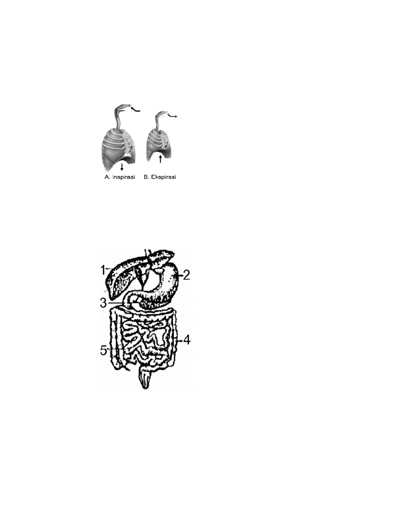
5. Perhatikan gambar proses pernapasan berikut:
Pernyataan yang tepat berhubungan dengan gambar sistem pemapasan
tersebut adalah ….
A. gambar A otot antar rusuk kontraksi, tulang rusuk terangkat, udara masuk
B. gambar A otot antar rusuk relaksasi, tulang rusuk terangkat, udara masuk
C. gambar B otot antar rusuk kontraksi, tulang rusuk turun, udara keluar
D. gambar B otot antar rusuk relaksasi, tulang rusuk turun, udara masuk
E. gambar B otot antar rusuk kontraksi, tulang rusuk turun, udara masuk
6. Perhatikan gambar di bawah ini!
Berdasarkan gambar, erepsin dihasilkan oleh organ yang berlabel ….
A. 1
B. 2
C. 3
D. 4
E. 5
7. Ciri pernapasan dada pada waktu ekspirasi adalah .…
A. otot tulang rusuk berkontraksi dan rongga dada mengecil
B. otot tulang rusuk berkontraksi dan rongga dada membesar
C. otot tulangrusuk relaksasi dan rongga dada mengecil
D. otot tulangrusuk relaksasi dan rongga dada membesar
E. rongga dada membesar dan rongga perut mengecil
8. Enzim yang dihasilkan oleh getah pankreas yang berfungsi untuk memecah
amilum menjadi maltosa adalah
A. Maltase
B. Steapsin
C. Amilase
D. Erepsin
E. Tripsin
9. Pada manusia pemasukan udara pernapasan terjadi apabila ….
A. otot antar tulang rusuk dalam dan otot diafragma berkontraksi
B. otot perut dan otot antar tulang rusuk luar berkontraksi
C. otot antar tulang rusuk luar dan otot diafragma berkontraksi
D. otot diafragma berkontraksi dan otot antar tulang rusuk luar berelaksasi
E. otot dinding perut dan otot diafragma berkontraksi
10. Dalam proses penyerapan makanan, lemak akan dipecah menjadi ….
A. asam lemak dan enzim
B. asam amino dan asam lemak
C. asam lemak dan gliserol
D. asam lemak dan glukosa
E. asam lemak dan amilum
11. Infeksi bakteri Diplococcus pneumoniae pada alveolus bisa menyebabkan
gangguan pernapasan yang dikenal dengan istilah ….
A. asma
B. pneumonia
C. tuberkulosis
D. bronkitis
E. asfiksi
12. Bahan makanan yang sejak di mulut telah dicerna dengan bantuan enzim
adalah ….
A. karbohidrat
B. protein
C. lemak
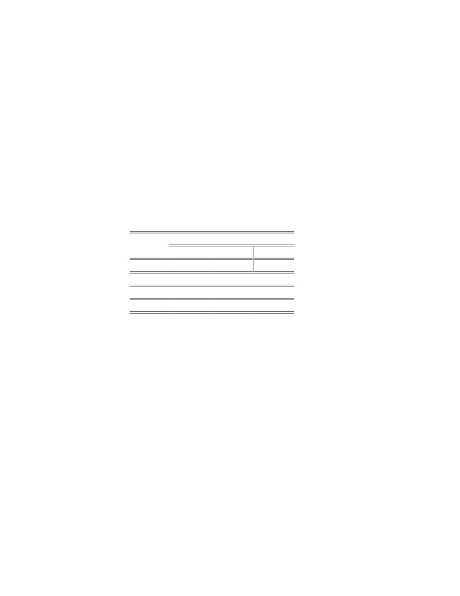
D. vitamin
E. mineral
13. Infeksi bakteri Diplococcus pneumoniae pada alveolus bisa menyebabkan
gangguan pernapasan yang dikenal dengan istilah ….
A. asma
B. pneumonia
C. tuberkulosis
D. bronkitis
E. asfiksi
14. Berikut ini data hasil uji makanan yang dilakukan siswa.
Bahan Reagen
makanan Lugol
Benedict
Biuret
1
Biru tua Biru
Biru
2
Kuning Merah bata Ungu
3
Kuning Merah bata Biru
4
Biru tua Merah bata Ungu
Dari hasil uji makanan tersebut yang mengandung glukosa dan protein
terdapat pada bahan makanan ….
A. 1
B. 2
C. 3
D. 2 dan 3
E. 2 dan 4
15. Berikut ini adalah organ yang berperan dalam sistem pernapasan yaitu ….
A. jantung, paru-paru, laring, faring
B. hidung, faring, laring , paru-paru
C. laring, faring, paru-paru, trakea
D. hati, faring, paru-paru, trakea
E. faring, laring, esofagus, paru-paru
16. Pernyataan manakah yang berkaitan dengan pencernaan amilum di mulut ….
A. amilum diubah menjadi polisakarida oleh enzim ptialin
B. amilum diubah menjadi protein oleh enzim amilase
C. amilum diubah menjadi lemak oleh enzim steapsin
D. amilum diubah menjadi glukosa oleh enzim ptialin
E. amilum diubah menjadi polisakarida oleh enzim steapsin
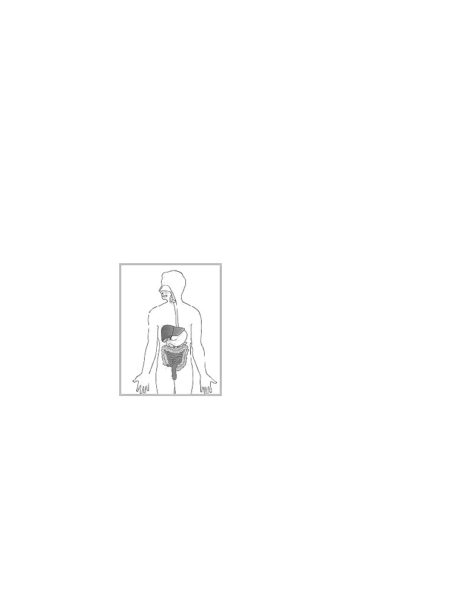
17. Jenis makanan yang merupakan sumber protein adalah ….
A. ayam, ikan, telur, susu
B. beras, jagung, kentang, telur
C. gandum, sagu, biji-bijian, ikan
D. beras, jagung, gandum, sagu
E. beras, jagung, gandum, buah-buahan
18. Organ pernapasan yang berperan sebagai alat penyaring dan penghangat
adalah ….
A. alveolus
B. bronkiolus
C. bronkus
D. hidung
E. trakea
19. Perhatikan gambar sistem pencernaan berikut ini
Urutan sistem pencernaan pada manusia adalah ….
A. Mulut-kerongkongan-lambung-usus halus- usus besar - anus
B. Mulut-keronngkongan-usus halus-lambung - usus besar-anus
C. Mulut-kerongkongan-usus halus-lambung-usus besar-anus
D. Mulut-tenggorokan- lambung - usus halus-usus besar-anus
E. Mulut-tenggorokan-lambung - usus besar -usus halus-anus
20. Pernapasan eksternal adalah pertukaran ….
A. udara bebas dengan udara dalam d-arah
B. oksigen di udara bebas dengan udara dalam rongga hidung
C. oksigen dari udara bebas dengan CO2 dalam rongga paru-paru
D. oksigen dalam d-arah dengan CO2 dalam jaringan
E. oksigen dalam alveolus dengan CO2 dalam kapiler d-arah alveolus
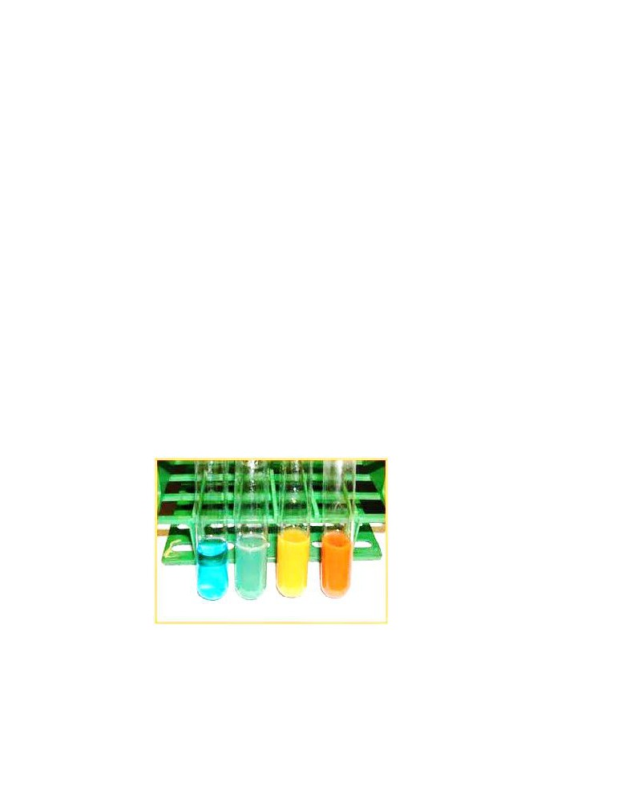
21. Berikut adalah jadwal makan Thoriq dalam satu hari
1. Buah pisang
2. Nasi Goreng
3. Ayam goreng
4. Susu
5. Sayur bayam
6. Tempe
Dari makanan Thoriq diatas, bahan makanan yang mengandung protein
adalah ….
A. 1 dan 2
B.
1 dan 3
C.
4 dan 5
D. 4 dan 6
E.
3 dan 6
22. Urutan alat pernapasan manusia adalah….
A. hidung, trakea, laring, dan paru-paru
B. hidung, faring, trakea, dan paru-paru
C. hidung, faring, laring, trakea, dan paru- paru
D. hidung, laring, dan paru-paru
E. hidung, faring, laring, dan paru-paru
23. Perhatikan eksperimen ini reaksi yang dulunya berwarna hijau menjadi
berwarna merah bata setelah dipanaskan pada Test Glukosa
Reagen yang dipakai untuk menguji adanya glukosa adalah ….
A. Biuret
B. Fehling dan millon
C. Larutan Iodium
D. Benedict
E. Millon
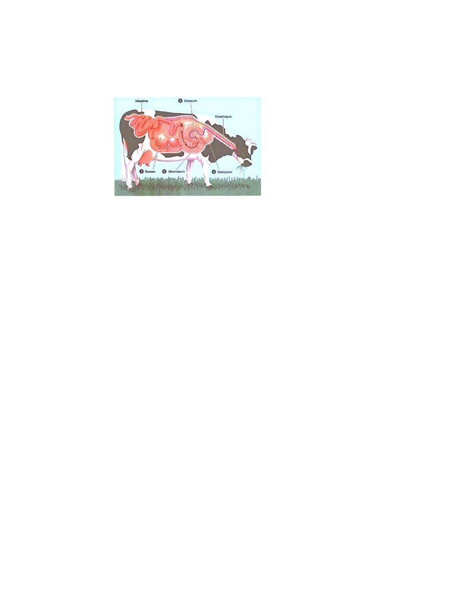
24. Perhatikan gambar berikut ini
Hewan pemamah biak dapat mencerna selulosa karena adanya enzim selulase
yang dihasilkan oleh ….
A. Dinding rumen
B. Dinding omasum yang bersifat asam
C. Bakteri yang dihasilkan oleh reticulum
D. Bakteri dalam rumen dengan suasana basa/alkalis
E. Dinding abomasum
25. Protein pertama kali dicerna secara kimiawi terjadi dalam ….
A. Mulut
B. Lambung
C. Kerongkongan
D. Usus halus
E. Usus besar
26. Berikut ini adalah nama-nama organ pada tubuh manusia:
1. Ventrikulus
2. Faring
3. Esofagus
4. Hepar
5. Usus 12 jari
Organ penyusun saluran pencernaan adalah ….
A. 1), 2), 3) dan 4)
B. 1), 3), 5) dan 6)
C. 2), 3), 4) dan 5)
D. 2), 3), 5) dan 6)
E. 2), 4), 5) dan 6)
27. Berikut ini termasuk sumber makanan sebagai sumber energi, kecuali….
A. protein nabati
B. lemak
C. vitamin
D. karbohidrat
E. protein hewani
28. Kelenjar ludah berperan dalam pencernaan makanan di ….
A. rongga mulut
B. kerongkongan
C. usus halus
D. usus besar
E. anus
29. Sebelum amilum dapat digunakan sebagai sumber energi oleh sel, terlebih
dahulu amilum diubah menjadi ….
A. glikogen
B. asam lemak
C. asam amino
D. glukosa
E. sukrosa
30. Pencernaan protein di lambung dibantu oleh enzim ….
A. tripsin yang mengubah protein menjadi asam amino
B. amilase yang mengubah protein menjadi asam amino
C. pepsin yang mengubah protein menjadi pepton
D. lipase yang mengubah protein menjadi asam lemak
E. pepsinogen yang mengubah protein menjadi asam lemak
31. Fungsi katup pangkal tenggorok adalah ….
A. menutup tenggorokan pada saat bernapas
B. menutup saluran napas pada saat menelan makanan
C. menutup kerongkongan saat menelan makanan
D. membantu menelan makanan
E. membantu mencerna makanan
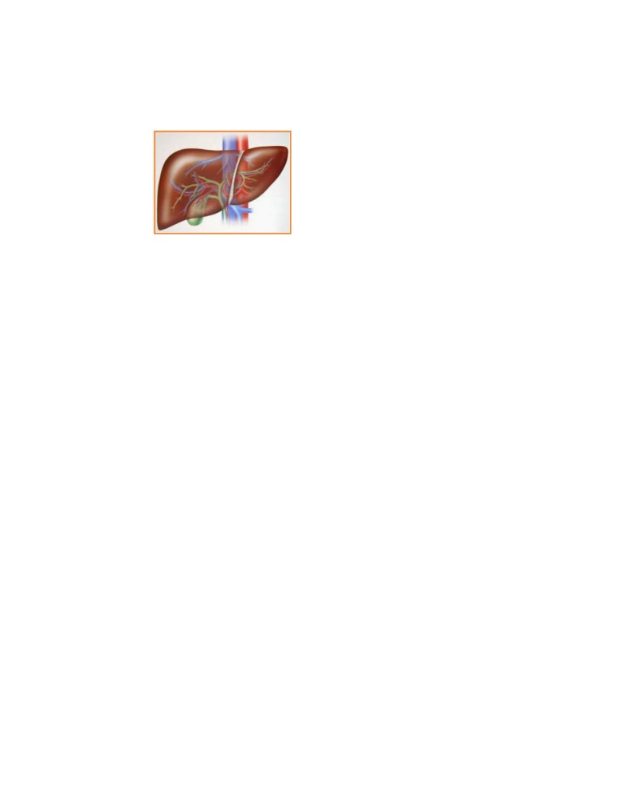
32. Perhatikan gambar organ berikut ini
Fungsi organ pada gambar diatas yang berkaitan dengan fungsi pencernaan
makanan adalah…
A. Menetralkan racun
B. Menghasilkan garam empedu
C. Menghasilkan sel darah
D. Menyimpan zat makanan
E. Menghancurkan eritrosit tua
33. Apabila otot-otot antar tulang rusuk berkontraksi maka akan terjadi hal-hal
berikut, kecuali ….
A. udara dari luar masuk ke paru-paru
B. tekanan udara dalam paru-paru meningkat
C. rongga dada membesar
D. tulang-tulang rusuk terangkat
E. diagfragma berelaksasi
34. Gangguan pernapasan yang biasanya disebabkan karena terlalu banyak
merokok adalah….
A. kanker paru-paru
B. TBC
C. Salesma
D. Dipteri
E. HIV-AIDS
35. Proses pencernaan yang terjadi di mulut berlangsung secara mekanik dan
kimiawi dengan menggunakan enzim sebagai katalisatornya. Zat yang diubah
di dalam mulut dengan perantaraan enzim adalah….
A. Protein
B. Mineral
C. Lemak
D. Vitamin
E. Karbohidrat
36. Berikut ini yang bukan merupakan alat ekskresi pada manusia adalah….
A. ginjal
B. kulit
C. paru-paru
D. jantung
E. hati
37. Pada sistem koordinasi manusia, yang mencakup sistem saraf pusat adalah….
A. saraf tepid dan otak
B. sumsum tulang belakang dan otak
C. prasimpatik dan parasimpatik
D. saraf spinal dan saraf cranial
E. saraf otonom dan otak
38. Proses pertemuan antara sel telur dan sperma disebut….
A. ejakulasi
B. fertilisasi
C. menstruasi
D. ereksi
E. diferensiasi
39. Urutan proses pembentukan urine yang benar adalah….
A. filtrasi-reabsorbsi-augmentasi
B. fitrasi-augmentasi-reabsorbsi
C. reabsorbsi-filtrasi-augmentasi
D. reabsorbsi-augmentasi-filtrasi
E. augmentasi-reabsorbsi-filtrasi
40. Apabila kita mencium aroma makanan yang lezat seketika air liur akan keluar.
Hal ini menunjukan adanya kolerasi atau hubungan antara….
A. indera pembau dan pengecap
B. indera penglihatan dan pengecap
C. indera peraba dan pengecap
D. indera pendengaran dan pembau
E. indera penglihatan dan pembau
41. Sel saraf yang membawa impuls atau rangsangan dari reseptor ke otak
adalah….
A. motorik
B. sensorik
C. neuron
D. dendrit
E. ganglion
42. Fungsi sistem ekskresi pada manusia adalah….
A. mengeluarkan zat sisa metabolisme yang masih dapat digunakan tubuh
B. mengeluarkan zat sisa metabolism yang tidak dapat digunakan tubuh
C. mengeluarkan fases dari hasil pencernaan
D. tempat pembentukan sel gamet
E. tempat mengalirkan darah ke seluruh tubuh
43. Organ tubuh yang memiliki saraf peraba adalah….
A. lidah
B. mata
C. telinga
D. kulit
E. hidung
44. Selain ovum, didalam organ reproduksi wanita juga menghasilkan….
A. hormone insulin dan testosteron
B. hormone estrogen dan insulin
C. hormone progesterone dan estrogen
D. hormone testosterone dan progesteron
E. hormone insulin dan prolaktin
45. Paru-paru sebagai organ ekskresi mengeluarkan zat sisa berupa….
A. O2 dan H2O
B. H2O dan CO2
C. O2 dan CO2
D. H2O dan NaCL
E. O2 dan NaCL
46. Sel yang mempunyai kromosom haploid (n) pada spermatogenesis adalah….
A. Spermatid dan spermatosid primer
B. Spermatid dan spermatogonium
C. Spermatogonium dan spermatosid sekunder
D. Spermatid dan spermatosid sekunder
E. Spermatosid primer dan spermatosid sekunder
47. Bagian dari organ ginjal yang berfungsi sebagai tempat proses augmentasi
adalah ….
A. glomerolus
B. tubulus kontortus distal
C. tubulus kontortus proksimal
D. kapsul bowman
E. ureter
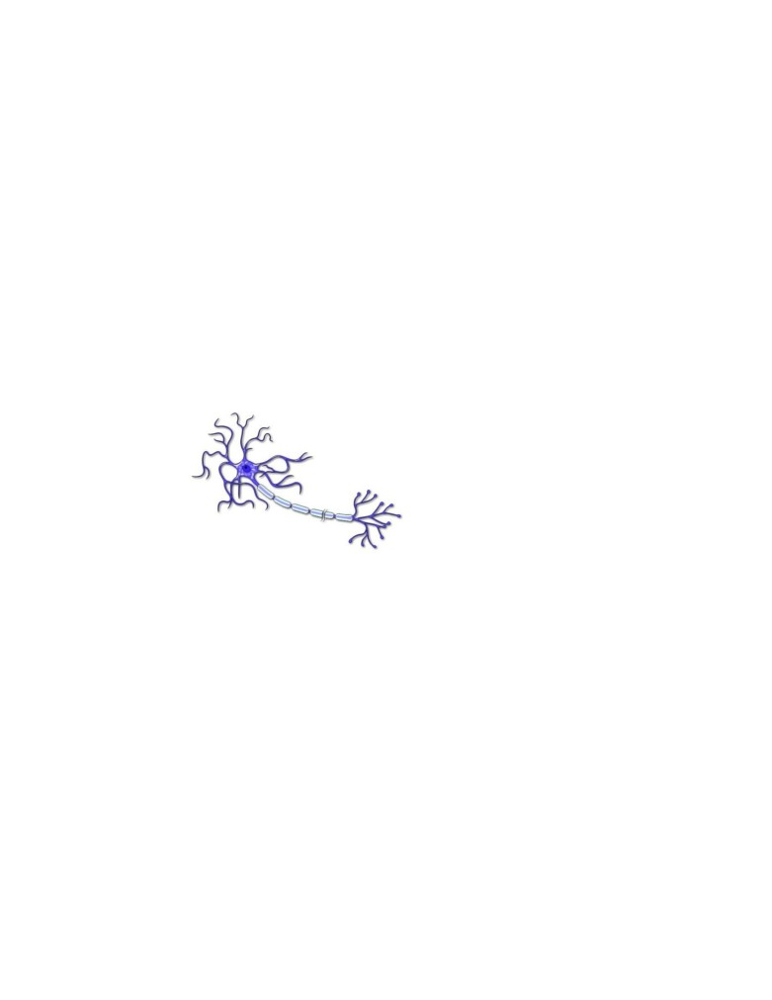
48. Selain berfungsi sebagai sistem ekskresi, Paru-paru juga berfungsi sebagai….
A. sistem peredaran darah
B. sistem reproduksi
C. sistem respirasi
D. sistem koordinasi
E. sistem imun
49. Kegiatan pengantaran sel-sel sperma untuk menuju sel telur disebut …..
A. kopulasi
B. ovulasi
C. menstruasi
D. ereksi
E. ejakulasi
50. Perhatikan gambar dibawah ini!
x
Fungsi dari struktur neuron yang berlabe “X” adalah….
A. mengantar impuls dari sel badan sel
B. memberikan nutrisi kepada badan sel
C. menyediakan makanan
D. mempercepat impuls
E. menjaga selubung myelin
51. Berikut ini upaya menjaga kesehatan paru-paru, kecuali….
A. istirahat yang cukup
B. menghindari rokok dan alkohol
C. rajin berolah raga
D. minum air putih yang cukup
E. tidak menggunakan masker saat berkendara
52. Berikut ini yang bukan termasuk ke dalam organ reproduksi wanita adalah. …
A. ovarium
B. tuba falopi
C. oviduk
D. vas deferens
E. vulva
53. Perhatikan pernyataan berikut!
1) reseptor
2) neuron sensorik
3) neuron motorik
4) otak
5) efektor
pada posisi gerak sadar, urutan arah satu jalan impuls adalah
A. 1-2-3-4-5
B.
1-2-4-3-5
C.
1-2-4-5-3
D. 1-2-5-3-4
E.
1-2-5-4-3
54. Suatu hari kebakaran terjadi di rumah Ani yang membuat kulit kedua tangan
Ani terbakar dan terkelupas. Berdasarkan anjuran dokter Ani harus menjalani
pencakokan kulit. Maka kulit ani yang diambil untuk dicangkok pada kedua
tangan Ani adalah kulit bagian….
A. wajah
B. betis/paha
C. tangan
D. telapak kaki
E. leher
55. Pada sistem reproduksi manusia, organ yang berfungsi menghasilkan sperma
adalah…
A. ginjal
B. indung telur
C. testis
D. penis
E. kantung kemih
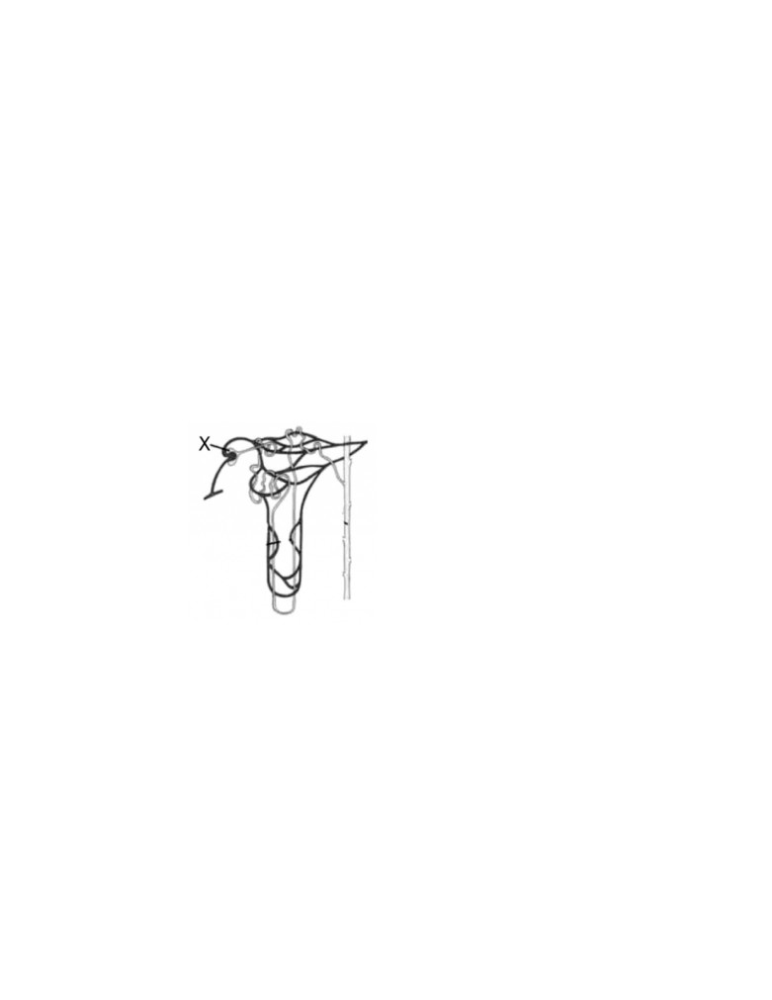
56. Ginjal memiliki jutaan nefron yang terletak pada bagian….
A. korteks
B. medula
C. piramida ginjal
D. badan malphigi
E. glomerolus
57. Organ dari sistem ekskresi yang berfungsi menyaring racun di dalam tubuh
adalah …..
A. ginjal
B. hati
C. kulit
D. paru-paru
E. jantung
58. Perhatikan gambar di bawah ini!
Hubungan yang tepat pada struktur neuron berlabel “X” adalah….
Bagian
Proses
Hasil
A. tubulus proksimal
filtrasi
urine sekunder
B. glomerulus
filtrasi
urine primer
C. tubulus distal
reabsorpsi
urine primer
D. tubulus distal
reabsorpsi
urine sekunder
E. tubulus kolektivus
augmentasi
urine sesungguhnya
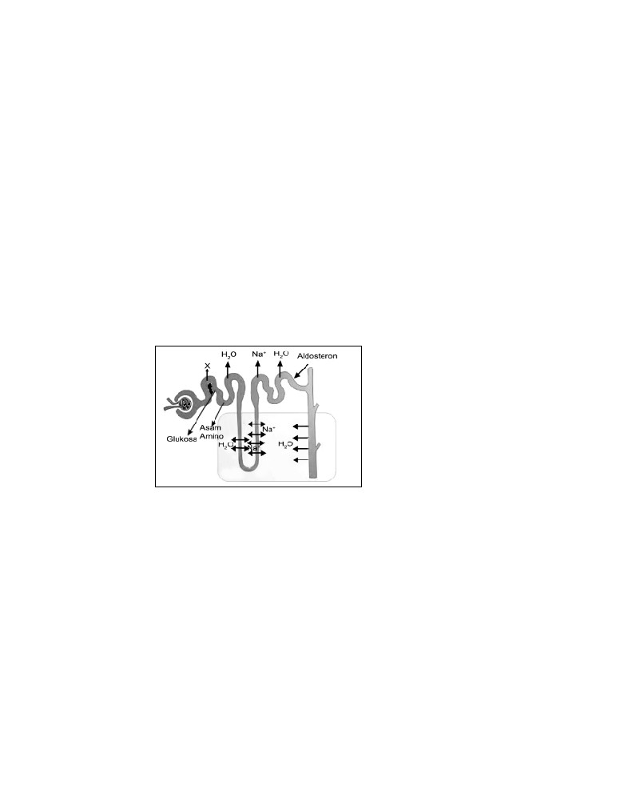
59. Penyakit ginjal yang ditandai dengan adanya albumin atau protein dalam urine
disebut….
A. albuminaria
B. uremia
C. diabetes militus
D. glukosuria
E. hidronefrosis
60. Reabsorbsi pada proses pembentukan urine berlangsung pada ginjal bagian….
A. glomerolus
B. tubulus kontortus distal
C. tubulus kontortus proksimal
D. kapsul bowman
E. ureter
61. Perhatikan gambar nefron di bawah ini!
Yang dihasilkan pada label “X” adalah….
A. urine primer
B. urine sekunder
C. darah bersih
D. urine racun
E. urine produktif
62. Pada glomerulus ginjal terdapat struktur yang disebut kapsul bowman. Kapsul
bowman berfungsi sebagai tempat ….
A. filtrasi
B. augmentasi
C. reabsorbsi
D. penggumpalan
E. penyerapan
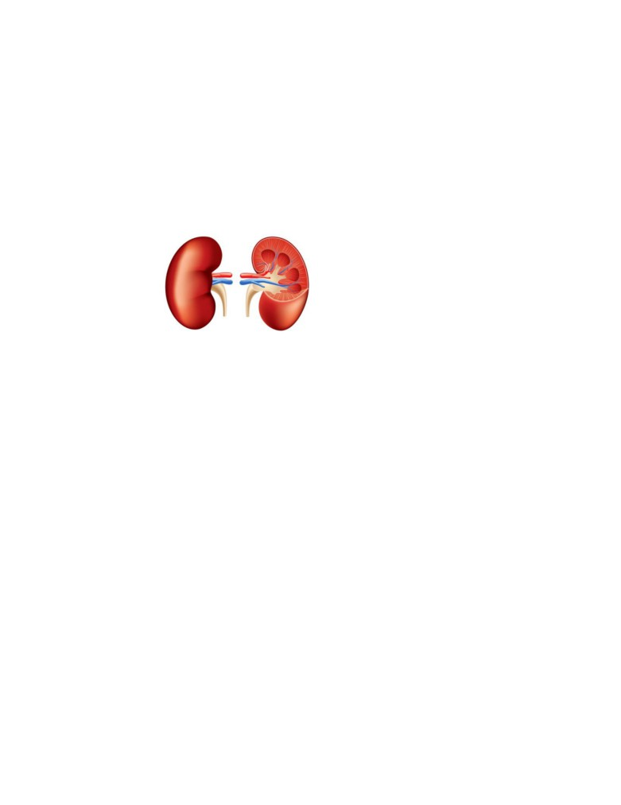
63. Berikut yang bukan organ dalam sistem koordinasi manusia adalah….
A. mata
B. hidung
C. gigi
D. kulit
E. telinga
64. Perhatikan gambar dibawah ini!
Berikut yang bukan fungsi dari organ diatas adalah….
A. membentuk urine
B. menjaga keseimbangan tubuh
C. menjaga tekanan osmosis
D. menjaga pH darah
E. mengeluarkan karbon dioksida
65. Pada wanita awal kehamilan ditandai oleh….
A. implantasi blastosit pada dinding rahim
B. fertilisasi sel telur dan spermatozoid
C. implantasi zigot pada dinding rahim
D. menempelnya zigot di tuba falopi
E. menempelnya zigot di ovarium
66. Perhatikan kelainan-kelainan di bawah ini!
1) Batu ginjal
2) Gagal ginjal
3) Hematuria
Yang termasuk kelainan-kelainan/penyakit pada ginjal manusia adalah….
A. 1 dan 2
B.
2 dan 3
C.
1 dan 3
D. semua salah
E. semua benar
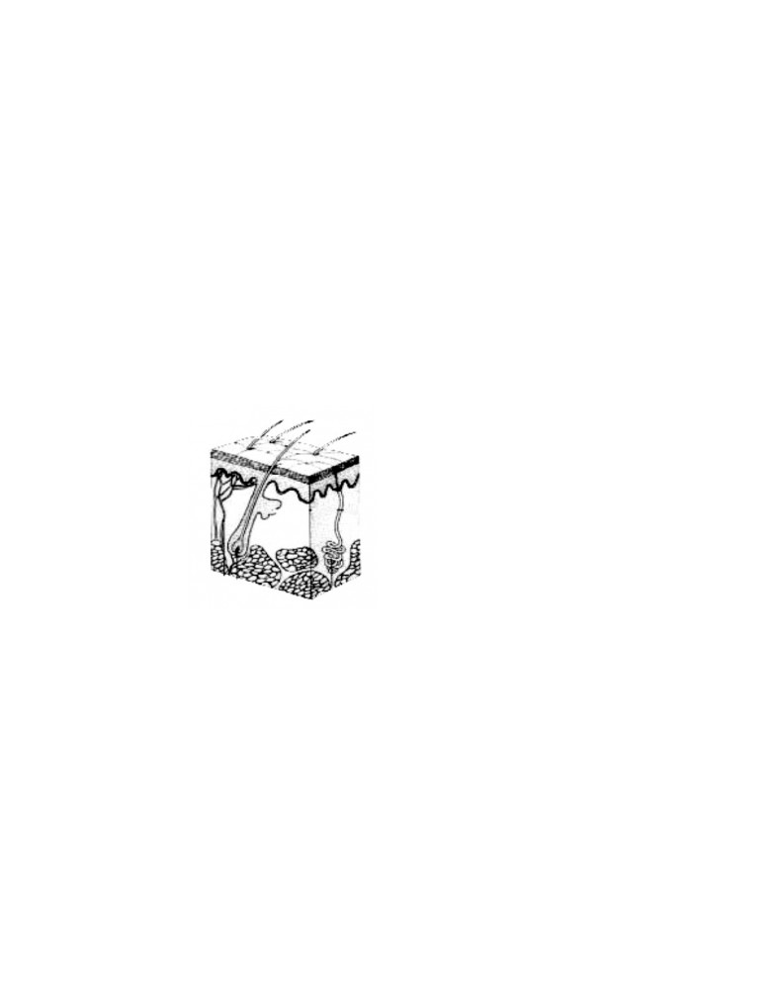
67. Testis dan kelenjar kelamin jantan berfungsi untuk memproduksi
A. Sperma dan hormon
B. Sperma dan enzim
C. hormon dan enzim
D. urine dan enzim
E. urine dan hormon
68. Tempat perombakan sel darah merah yang rusak menjadi empedu adalah….
A. ginjal
B. hati
C. kulit
D. paru-paru
E. jantung
69. Perhatikan gambar di bawah ini!
Hasil metabolisme yang dihasilkan oleh organ sistem ekrkresi pada gambar
adalah….
A. CO2
B. fases
C. urine
D. uap air
E. garam
70. Pada manusia, proses pembentukan sperma disebut….
A. ovulasi
B. oogenesis
C. spermatogenesis
D. maeosis
E. mitosis